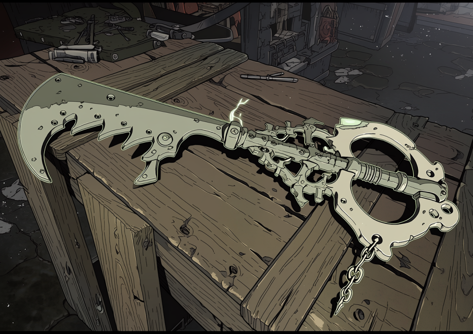

路地裏の玄人好み、武器屋「春雨」の店主だ。
今回はシーフ（盗賊職）の連中に、とっておきの「時短アイテム」を紹介する。

価格：金貨8枚
対象：王都周辺ダンジョン（低～中層）の「規格品宝箱」
分類：トラップ解除補助具 / メンテナンス用横流し品
ダンジョンに設置されている宝箱、あれは9割が「ダンジョン運営会社（またはギルド）」による設置品だってことは知ってるな？ 当然、鍵の規格も決まっている。「モデルT-40」か「モデルM-2」だ。
この『スケルトン・バスター』は、そのメーカー共通規格の構造的欠陥を突いた専用工具だ。
以上だ。鍵穴なんて飾りだ。運営側のメンテナンス用バイパス穴を直接いじるんだから、罠が発動するわけねえだろ。 毒矢も、爆発も、アラームも、物理的にロック機構ごと無効化される。
店主の一言
「時は金なり。命はもっと金なりだ。
チマチマ針金で鍵穴まさぐってる暇があったら、こいつでサクッと“回収”してずらかるのがプロってもんだろ？」